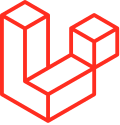

Laravel
|  | |
| Developer(s) | Taylor Otwell |
|---|---|
| Initial release | June 2011[1] |
| Stable release | 10.2.1[2]
/ 16 May 2023 |
| Repository | github |
| Written in | PHP |
| Type | Web framework |
| License | MIT License |
| Website | laravel |
{kind=link}
Laravel is a free and open-source PHP web framework,[3] created by Taylor Otwell and intended for the development of web applications following the model–view–controller (MVC) architectural pattern and based on Symfony. Some of the features of Laravel are a modular packaging system with a dedicated dependency manager, different ways for accessing relational databases, utilities that aid in application deployment and maintenance, and its orientation toward syntactic sugar.[4][5]: 2, 5–9 [6][7]
The source code of Laravel is hosted on GitHub and licensed under the terms of MIT License.[8]
History[edit]
Taylor Otwell created Laravel as an attempt to provide a more advanced alternative to the CodeIgniter framework, which did not provide certain features such as built-in support for user authentication and authorization. Laravel's first beta release was made available on June 9, 2011, followed by the Laravel 1 release later in the same month. Laravel 1 included built-in support for authentication, localisation, models, views, sessions, routing and other mechanisms, but lacked support for controllers that prevented it from being a true MVC framework.[1]
Laravel 2 was released in September 2011, bringing various improvements from the author and community. Major new features included the support for controllers, which made Laravel 2 a fully MVC-compliant framework, built-in support for the inversion of control (IoC) principle, and a templating system called Blade. As a downside, support for third-party packages was removed in Laravel 2.[1]
Laravel 3 was released in February 2012 with a set of new features including the cmd command-line interface (CLI) named Artisan, built-in support for more database management systems, database migrations as a form of version control for database layouts, support for handling events, and a packaging system called Bundles. An increase of Laravel's userbase and popularity lined up with the release of Laravel 3.[1]
Laravel 4, codenamed Illuminate, was released in May 2013. It was made as a complete rewrite of the Laravel framework, migrating its layout into a set of separate packages distributed through Composer, which serves as an application-level package manager. Such a layout improved the extensibility of Laravel 4, which was paired with its official regular release schedule spanning six months between minor point releases. Other new features in the Laravel 4 release include database seeding for the initial population of databases, support for message queues, built-in support for sending different types of email, and support for delayed deletion of database records called soft deletion.[1][9]: 18–19
Laravel 5 was released in February 2015 as a result of internal changes that ended up in renumbering the then-future Laravel 4.3 release. New features in the Laravel 5 release include support for scheduling periodically executed tasks through a package called Scheduler, an abstraction layer called Flysystem that allows remote storage to be used in the same way as local file systems, improved handling of package assets through Elixir, and simplified externally handled authentication through the optional Socialite package. Laravel 5 also introduced a new internal directory tree structure for developed applications.[5]: 13–14 [10]
Lumen 5.0 is the initial release of the Lumen framework, a light derivative of Laravel optimized for speed.[11] This initial release is based on the Laravel 5.x series of PHP components, and following versions reflect the Laravel versions with which it shares common infrastructure.[12] As of 2022, authors no longer recommend the use of Lumen for gaining these advantages, and promote Laravel Octane instead.[13]
Laravel 5.1, released in June 2015, was the first release of Laravel to receive long-term support (LTS). New LTS versions were planned for one every two years.[14]
Laravel 5.3 was released on August 23, 2016. The new features in 5.3 are focused on improving developer speed by adding additional out of the box improvements for common tasks.[15]
Laravel 5.4 was released on January 24, 2017, with many new features like Laravel Dusk, Laravel Mix, Blade Components and Slots, Markdown Emails, Automatic Facades, Route Improvements, Higher Order Messaging for Collections, and many others.[16]
Laravel 6 was released on September 3, 2019, shift blueprint code generation, introducing semantic versioning, compatibility with Laravel Vapor, improved authorization responses, improved job middleware, lazy collections, and sub-query improvements. The frontend scaffolding was removed from the main package and moved into the laravel/ui package.[17]
Laravel 7 was released on March 3, 2020, with new features like Laravel Sanctum, Custom Eloquent Casts, Blade Component Tags, Fluent String Operations and Route Model Binding Improvements. [18]
Laravel 8 was released on September 8, 2020, with new features like Laravel Jetstream, model factory classes, migration squashing, Tailwind CSS for pagination views and other usability improvements. [19]
Laravel 9 was released on February 8, 2022. [12]
Laravel 10 was released on February 14, 2023. [20]
Release history[edit]
Versions designated LTS were supported with bug fixes for 2 years and security fixes for 3 years. Other releases were supported with bug fixes for 6 months and security fixes for 1 year.[21] As of version 8, major versions are released yearly, and the support timeline is: bug fixes for 18 months and security fixes for 2 years, for all releases. For additional libraries, only the latest major release receives bug fixes. [19]
| Version | Release date | PHP version |
|---|---|---|
| 1.0 | June 2011 | |
| 2.0 | September 2011 | |
| 3.0 | February 22, 2012 | |
| 3.1 | March 27, 2012 | |
| 3.2 | May 22, 2012 | |
| 4.0 | May 28, 2013 | ≥ 5.3.0 |
| 4.1 | December 12, 2013 | ≥ 5.3.0 |
| 4.2 | June 1, 2014 | ≥ 5.4.0 |
| 5.0 | February 4, 2015 | ≥ 5.4.0 |
| 5.1 LTS | June 9, 2015 | ≥ 5.5.9 |
| 5.2 | December 21, 2015 | ≥ 5.5.9 |
| 5.3 | August 23, 2016 | ≥ 5.6.4 |
| 5.4 | January 24, 2017 | ≥ 5.6.4 |
| 5.5 LTS | August 30, 2017 | ≥ 7.0.0 |
| 5.6 | February 7, 2018 | ≥ 7.1.3 |
| 5.7 | September 4, 2018 | ≥ 7.1.3 |
| 5.8 | February 26, 2019 | ≥ 7.1.3 |
| 6 LTS | September 3, 2019 | 7.2 – 8.0[22] |
| 7 | March 3, 2020[23] | 7.2 – 8.0[19] |
| 8 | September 8, 2020 | 7.3 – 8.1[24] |
| 9 | February 8, 2022[22] | 8.0 – 8.1[22] |
| 10 | February 14, 2023 | ≥ 8.1[20] |
| 11 | Q1 2024 | ≥ 8.2 |
Features[edit]
The following features serve as Laravel's key design points (where not specifically noted, descriptions refer to the features of Laravel 3):[4][5]: 5–9 [6][7][26]
- Bundles provide a modular packaging system since the release of Laravel 3, with bundled features already available for easy addition to applications. Furthermore, Laravel 4 uses Composer as a dependency manager to add framework-agnostic and Laravel-specific PHP packages available from the Packagist repository.[27]
- Eloquent ORM (object-relational mapping) is an advanced PHP implementation of the active record pattern, providing at the same time internal methods for enforcing constraints on the relationships between database objects. Following the active record pattern, Eloquent ORM presents database tables as classes, with their object instances tied to single table rows.[28]
- Query builder, available since Laravel 3, provides a more direct database access alternative to the Eloquent ORM. Instead of requiring SQL queries to be written directly, Laravel's query builder provides a set of classes and methods capable of building queries programmatically. It also allows selectable caching of the results of executed queries.[29]
- Application logic is an integral part of developed applications, implemented either by using controllers or as part of the route declarations. The syntax used to define application logic is similar to the one used by Sinatra framework.
- Reverse routing defines a relationship between the links and routes, making it possible for later changes to routes to be automatically propagated into relevant links. When the links are created by using names of existing routes, the appropriate uniform resource identifiers (URIs) are automatically created by Laravel.
- Restful controllers provide an optional way for separating the logic behind serving HTTP GET and POST requests.
- Class auto loading provides automated loading of PHP classes without the need for manual maintenance of inclusion paths. On-demand loading prevents inclusion of unnecessary components, so only the actually used components are loaded.
- View composers serve as customizable logical code units that can be executed when a view is loaded.
- Blade templating engine combines one or more templates with a data model to produce resulting views, doing that by transpiling the templates into cached PHP code for improved performance. Blade also provides a set of its own control structures such as conditional statements and loops, which are internally mapped to their PHP counterparts. Furthermore, Laravel services may be called from Blade templates, and the templating engine itself can be extended with custom directives.[30][31]
- IoC containers make it possible for new objects to be generated by following the inversion of control (IoC) principle, in which the framework calls into the application- or task-specific code, with optional instantiating and referencing of new objects as singletons.
- Migrations provide a version control system for database schemas, making it possible to associate changes in the application's codebase and required changes in the database layout. As a result, this feature simplifies the deployment and updating of Laravel-based applications.[32]
- Database seeding provides a way to populate database tables with selected default data that can be used for application testing or be performed as part of the initial application setup.[32]
- Unit testing is provided as an integral part of Laravel,[9]: 61–62 which itself contains unit tests that detect and prevent regressions in the framework. Unit tests can be run through the provided artisan command-line utility.
- Automatic pagination simplifies the task of implementing pagination, replacing the usual manual implementation approaches with automated methods integrated into Laravel.
- Form request is a feature of Laravel 5 that serves as the base for form input validation by internally binding event listeners, resulting in automated invoking of the form validation methods and generation of the actual form.
- Homestead - a Vagrant virtual machine that provides Laravel developers with all the tools necessary to develop Laravel straight out of the box, including, Ubuntu, Gulp, Bower and other development tools that are useful in developing full scale web applications.[33]
- Sail - Sail provides a great starting point for building a Laravel application using PHP, MySQL, and Redis without requiring prior Docker experience. [34]
- Valet - Tooling to setup quickly a minimalist PHP local development environment on your Mac using the power of Homebrew, Nginx and DnsMasq.[35]
First-party packages[edit]
Ready-to-use packages provided by Laravel through Composer and Packagist include the following:
- Cashier, introduced in Laravel 4.2, provides an interface for managing subscription billing services provided by Stripe, such as handling coupons and generating invoices.[36]
- Envoy, introduced in Laravel 4.2, provides a clean, minimal syntax for defining common tasks you run on your remote servers. Using Blade style syntax, you can easily setup tasks for deployment, Artisan commands, and more.[37]
- Socialite, provides simplified mechanisms for authentication with different OAuth providers, including Facebook, Twitter, Google, GitHub and Bitbucket.[38]
- Passport, introduced in Laravel 5.3, provides a full OAuth2 server implementation for your Laravel application in a matter of minutes.[39]
- Scout, introduced in Laravel 5.3, provides a simple, driver based solution for adding full-text search to your Eloquent models.[40]
- Dusk, introduced in Laravel 5.4, provides an expressive, easy-to-use browser automation and testing API.[41]
- Horizon, introduced in Laravel 5.5, provides a visual dashboard and code-driven configuration for your Laravel powered Redis queues.[42]
- Telescope, introduced in Laravel 5.7, provides insight into the requests coming into your application, exceptions, log entries, database queries, queued jobs, mail, notifications, cache operations, scheduled tasks, variable dumps and more.[43]
- Sanctum, introduced in Laravel 7.0, provides a featherweight authentication system for SPAs (single page applications), mobile applications, and simple, token based APIs.[44] Firstly called Laravel Airlock, it has been renamed due to a trademark dispute regarding the name ‘Airlock.'[45]
- Jetstream, introduced in Laravel 8.0, this providing an application scaffold for Laravel. This package effectively builds on the idea of the UI tools built into past Laravel applications allowing the user to pick between two options, Livewire + Blade or Inertia.js + Vue. This package works with Laravel Fortify.[46] There was some controversy with Taylor Otwell and Laravel users shortly after Laravel's release due to some believing old application scaffolds were being deprecated in favour of Jetstream. It has since been clarified this is not the case.[47]
- Fortify, introduced in Laravel 8.0, providing an application scaffold for Laravel. Fortify is used to handle the manage of typical user tasks, building upon typical authentication to provide things like teams and two-factor authentication mechanisms. The package works closely with Laravel Jetstream.[48] Fortify is somewhat based on features which were originally created for Laravel Spark.
- Breeze, Laravel Breeze is a minimal, simple implementation of all of Laravel's authentication features, including login, registration, password reset, email verification, and password confirmation. Laravel Breeze's default view layer is made up of simple Blade templates styled with Tailwind CSS. Breeze provides a wonderful[citation needed] starting point for beginning a fresh Laravel application.
Laravel's command-line interface (CLI), called Artisan, was initially introduced in Laravel 3 with a limited set of capabilities. Laravel's later migration to a Composer-based architecture allowed Artisan to incorporate different components from the Symfony framework, resulting in the availability of additional Artisan features in Laravel 4.
The features of Artisan are mapped to different subcommands of the Artisan command-line utility, providing functionality that aids in managing and building Laravel-based applications. Common uses of Artisan include managing database migrations and seeding, publishing package assets, and generating boilerplate code for new controllers and migrations; the latter frees the developer from creating proper code skeletons. The functionality and capabilities of Artisan can also be expanded by implementing new custom commands, which, for example, may be used to automate application-specific recurring tasks.
Conferences[edit]
{kind=link}
Laracon is the official Laravel conference centered around the Laravel framework, covering its development, uses, and related general software development topics. Laracon has taken place in the United States, Europe and online in the past.[49][50] Typically, the conference happens in the United States and Europe every year. 2017 was the first year a Laracon was held as an online event only. 2018 was the first year a Laracon was held in Australia. Each year the conference has a different variety of sponsors and organizers, but Laravel, Laravel News and UserScape are usually the primary organizers.
While the numerous Laracon conferences are officially run, a number of other conferences are run under the name of Laravel Live. Currently, there are yearly held Laravel Live UK and Laravel Live India conferences.[51][52] While these are not officially run, they have the permission of Taylor Otwell to use the name Laravel.
See also[edit]
{kind=link}
- Comparison of web frameworks
- Comparison of web template engines
- October, a content management system built upon Laravel
- Vue.js, a front-end framework that's shipped by default within Laravel
- How to create a contact us form in Laravel 9 and store the form data in MySQL database
References[edit]
- ^ Jump up to: a b c d e Maks Surguy (July 27, 2013). "History of Laravel PHP framework, Eloquence emerging". maxoffsky.com. Archived from the original on November 27, 2020. Retrieved May 10, 2015.
- ^ "v10.2.1". May 16, 2023. Retrieved May 19, 2023.
- ^ "The real-time community site Voten goes open-source". Laravel News. June 16, 2017. Archived from the original on November 12, 2020. Retrieved April 30, 2020.
- ^ Jump up to: a b Daniel Gafitescu (June 6, 2013). "Goodbye CodeIgniter, Hello Laravel". sitepoint.com. Archived from the original on November 30, 2020. Retrieved December 21, 2013.
- ^ Jump up to: a b c Martin Bean (April 2015). Laravel 5 Essentials. Packt. ISBN 978-1785283017. Archived from the original on February 19, 2023. Retrieved September 2, 2015.
- ^ Jump up to: a b "Laravel Documentation (versions 3.0–3.2.14)". three.laravel.com. Archived from the original on August 26, 2014. Retrieved August 30, 2014.
- ^ Jump up to: a b "Laravel Documentation (version 4.2)". laravel.com. Archived from the original on September 20, 2014. Retrieved August 30, 2014.
- ^ "laravel/framework: The Laravel Framework". github.com. Archived from the original on January 16, 2023. Retrieved January 17, 2023.
- ^ Jump up to: a b Raphaël Saunier (January 2014). Getting Started with Laravel 4. Packt. ISBN 978-1783287031. OCLC 868960968.
- ^ Eric Barnes (January 30, 2015). "Laravel 5". laravel-news.com. Archived from the original on November 11, 2016. Retrieved May 10, 2015.
- ^ "Introducing Lumen from Laravel". Matt Stauffer. Archived from the original on August 18, 2022. Retrieved July 25, 2022.
- ^ Jump up to: a b "Release Notes - Laravel - The PHP Framework For Web Artisans". laravel.com. Archived from the original on February 10, 2022. Retrieved February 12, 2022.
- ^ Sorgner, Stefan Lorenz (November 4, 2021), "The End as a New Beginning", We Have Always Been Cyborgs, Policy Press, pp. 185–187, doi:10.1332/policypress/9781529219203.003.0005, archived from the original on February 19, 2023, retrieved July 25, 2022
- ^ Eric L. Barnes (June 9, 2015). "Laravel 5.1 is released". laravel-news.com. Archived from the original on May 12, 2016. Retrieved June 14, 2015.
- ^ Eric L. Barnes (August 23, 2016). "Laravel 5.3 is now released". laravel-news.com. Archived from the original on August 28, 2016. Retrieved August 23, 2016.
- ^ "Laravel 5.4 Is Now Released". Laravel News. January 24, 2017. Archived from the original on November 25, 2020. Retrieved February 21, 2017.
- ^ "Laravel 6 release notes". Laravel. Laravel. Archived from the original on January 30, 2021. Retrieved November 1, 2019.
- ^ "Release Notes - Laravel - The PHP Framework For Web Artisans". laravel.com. Archived from the original on March 10, 2020. Retrieved March 9, 2020.
- ^ Jump up to: a b c d "Release Notes - Laravel - The PHP Framework For Web Artisans". laravel.com. Archived from the original on July 21, 2021. Retrieved May 9, 2020.
- ^ Jump up to: a b "Laravel 10 is released". laravel-news.com. Archived from the original on February 14, 2023. Retrieved February 13, 2023.
- ^ "Laravel Documentation: Releases". Laravel. Archived from the original on November 23, 2020. Retrieved February 26, 2017.
- ^ Jump up to: a b c "Laravel 9 is Now Released". Archived from the original on February 17, 2022. Retrieved February 9, 2022.
- ^ @laravelphp (February 12, 2020). "We are aiming to release Laravel 7.x..." (Tweet) – via Twitter.
- ^ "Laravel: PHP 8 Support". Laravel. November 26, 2020. Archived from the original on July 23, 2021. Retrieved August 6, 2021.
- ^ "Github Repository Release Notes - Laravel". Laravel. Archived from the original on March 3, 2019. Retrieved November 2, 2019.
- ^ Jeffrey Way (November 28, 2012). "Why Laravel is Taking the PHP Community by Storm". code.tutsplus.com. Archived from the original on May 5, 2015. Retrieved May 9, 2015.
- ^ "Laravel documentation (version 4.2): Package development". laravel.com. Archived from the original on August 13, 2014. Retrieved August 30, 2014.
- ^ "Develop Faster with the Laravel PHP Framework". developer.com. Archived from the original on December 3, 2020. Retrieved April 17, 2015.
- ^ "Laravel documentation (version 4.0): Query builder". laravel.com. Archived from the original on March 24, 2015. Retrieved April 27, 2015.
- ^ "Laravel documentation (version 5.1): Blade Templates". laravel.com. Archived from the original on June 10, 2015. Retrieved June 10, 2015.
- ^ Dayle Rees (2014). "Laravel Blade engine". daylerees.com. Archived from the original on May 31, 2015. Retrieved June 10, 2015.
- ^ Jump up to: a b "Laravel documentation (version 5.0): Migrations and seeding". laravel.com. Archived from the original on April 8, 2015. Retrieved April 27, 2015.
- ^ "Laravel Homestead - Laravel the PHP Framework for Web artisans". Archived from the original on October 31, 2016. Retrieved October 30, 2016.
- ^ "Laravel Sail - Laravel - The PHP Framework for Web artisans". Archived from the original on April 26, 2023. Retrieved April 26, 2023.
- ^ "Laravel Valet". Laravel. April 26, 2023. Archived from the original on April 26, 2023. Retrieved April 26, 2023.
- ^ "Laravel Cashier - Laravel - The PHP Framework For Web Artisans". laravel.com. Archived from the original on October 30, 2020. Retrieved February 28, 2020.
- ^ "Laravel Envoy - Laravel - The PHP Framework For Web Artisans". laravel.com. Archived from the original on January 10, 2021. Retrieved February 28, 2020.
- ^ "Laravel Socialite - Laravel - The PHP Framework For Web Artisans". laravel.com. Archived from the original on November 23, 2020. Retrieved February 28, 2020.
- ^ "Laravel Passport - Laravel - The PHP Framework For Web Artisans". laravel.com. Archived from the original on November 12, 2020. Retrieved February 28, 2020.
- ^ "Laravel Scout - Laravel - The PHP Framework For Web Artisans". laravel.com. Archived from the original on November 29, 2020. Retrieved February 28, 2020.
- ^ "Laravel Dusk - Laravel - The PHP Framework For Web Artisans". laravel.com. Archived from the original on November 29, 2020. Retrieved February 28, 2020.
- ^ "Laravel Horizon - Laravel - The PHP Framework For Web Artisans". laravel.com. Archived from the original on November 23, 2020. Retrieved February 28, 2020.
- ^ "Laravel Telescope - Laravel - The PHP Framework For Web Artisans". laravel.com. Archived from the original on November 29, 2020. Retrieved February 28, 2020.
- ^ "Laravel Sanctum - Laravel - The PHP Framework For Web Artisans". laravel.com. Archived from the original on November 23, 2020. Retrieved April 1, 2020.
- ^ "Laravel Airlock Renamed to Sanctum". PAUL REDMOND. Archived from the original on May 24, 2020. Retrieved April 1, 2020.
- ^ "Introduction | Laravel Jetstream". jetstream.laravel.com. Archived from the original on October 3, 2020. Retrieved October 16, 2020.
- ^ Otwell, Taylor (October 5, 2020). "Jetstream Discussion". YouTube. Archived from the original on October 22, 2020. Retrieved October 16, 2020.
- ^ laravel/fortify, The Laravel Framework, October 16, 2020, archived from the original on October 7, 2020, retrieved October 16, 2020
- ^ "Laracon Online | The official worldwide Laravel online conference". laracon.net. Archived from the original on December 16, 2020. Retrieved March 24, 2017.
- ^ "Search Results". laravel-news.com. Archived from the original on May 29, 2020. Retrieved March 24, 2017.
- ^ "Laravel Live UK | Home". laravellive.uk. Archived from the original on August 14, 2020. Retrieved August 5, 2020.
- ^ "Laravel Live India Community". Laravel Live India Community. Archived from the original on August 10, 2020. Retrieved August 5, 2020.
Further reading[edit]
- Laravel Design Patterns and Best Practices, Packt, ISBN 978-1783287987, July 2014, by Arda Kılıçdağı and H. İbrahim Yilmaz
{kind=link}